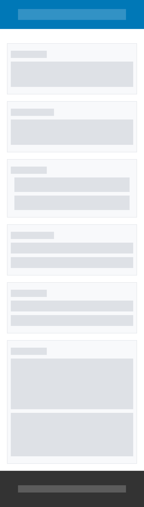
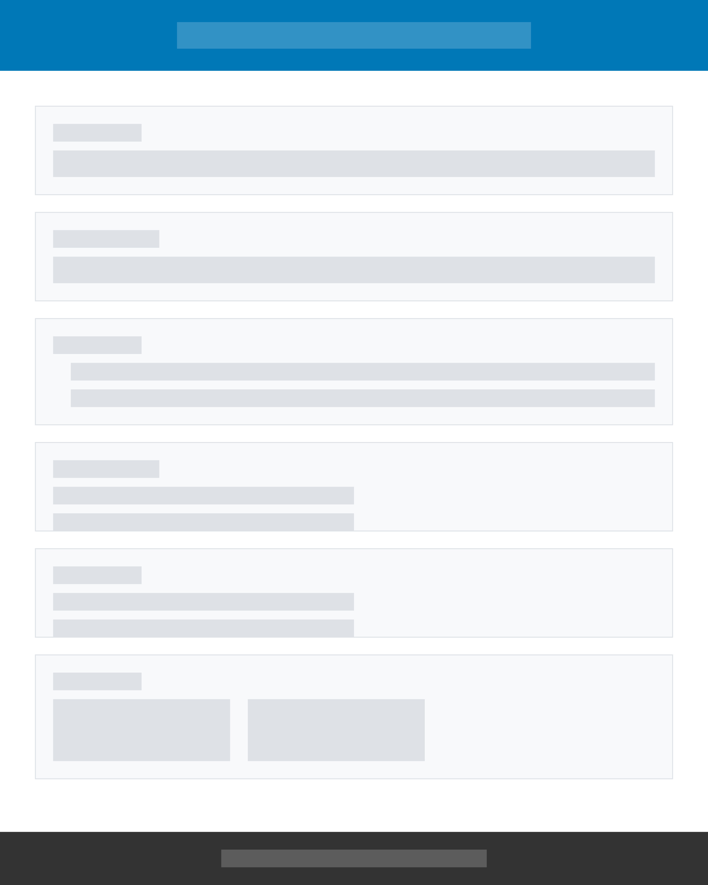

Name: My Portfolio Hub
Reason: This site will serve as a professional portfolio showcasing my web development projects, skills, and contact information.
This website will provide an online presence where potential employers or clients can view my work, learn about my skills, and contact me for projects or job opportunities.
Primary Color: #0077b6 (Used for headings and accents)
Secondary Color: #f4a261 (Used for background highlights and buttons)
Heading Font: Poppins (Used for all headings)
Body Font: Roboto (Used for body text and descriptions)
Placeholder for wireframe sketches of the mobile and desktop layouts.
 